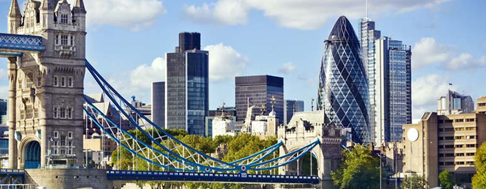

LONDRES
-Extensión y Población-
Aunque originalmente Londres era una ciudad pequeña que comprende lo que hoy se denomina la city , hoy en día se trata de una de las mayores aglomeraciones urbanas o megalópolis del mundo, al haberse extendido a lo largo de kilómetros, abarcando multitud de antiguos pueblos y aldeas colindantes.
-Información turística-
Entre las principales atracciones de Londres, cabe destacar la Torre de Londres , el London Eye , la galería de arte moderno Tate Modern , Trafalgar Square, la abadía de Westminster, Parliament Bridge, Tower Bridge, Hyde Park, Regents Park, The Mall, el palacio de Buckingham], el Museo Británico , el Museo de Historia Natural ...
Simplemente pasear por sus céntricos barrios de Westminster y la City se convierten en un amplio atractivo para los sentidos. Millones de personas de todas las razas y procedencias se mezclan en un ir y venir frenético, pero al tiempo uno puede disfrutar de la oferta de ocio que ofrecen miles de pubs, decenas de teatros, cientos de parques, mercados, la vida nocturna, tiendas de super lujo, etc...
El área metropolitana de Londres tiene una población de 13.945.000 habitantes. Es la segunda mayor área metropolitana de Europa, sólo superada por Moscú. Tiene una vida y flujo económico que la sitúan en el segundo puesto mundial.
